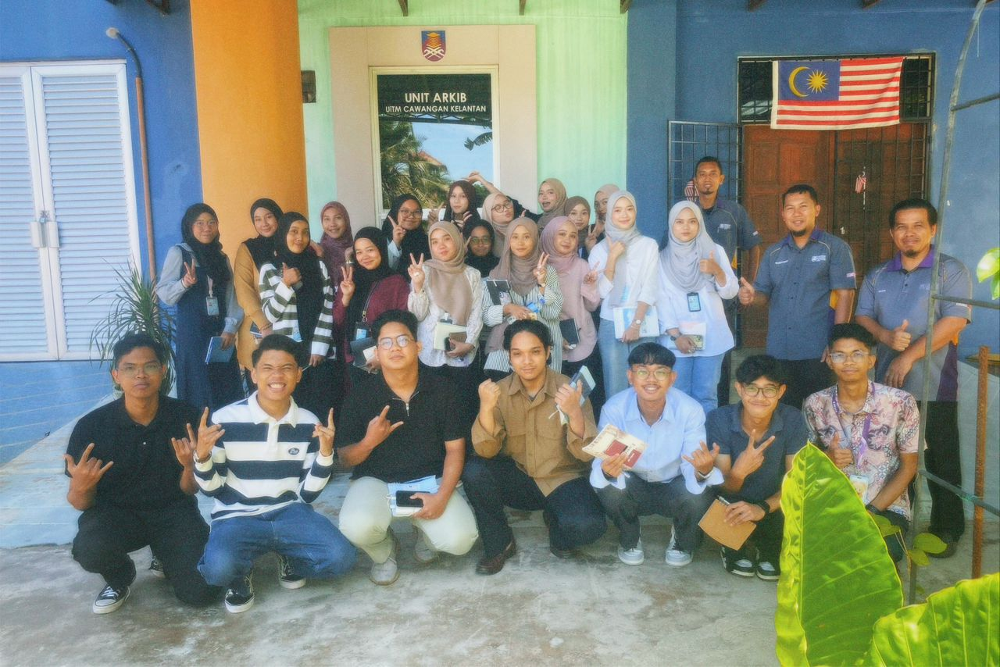
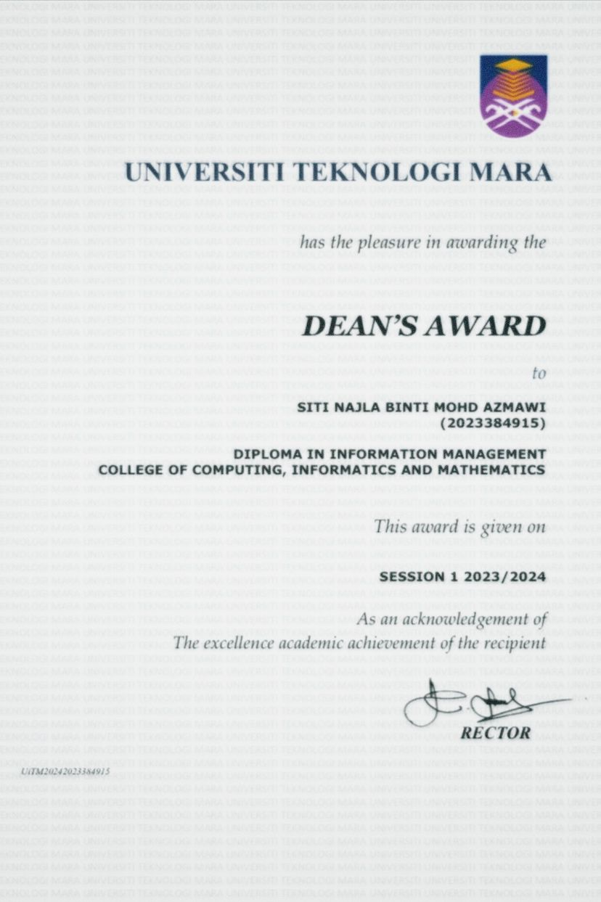
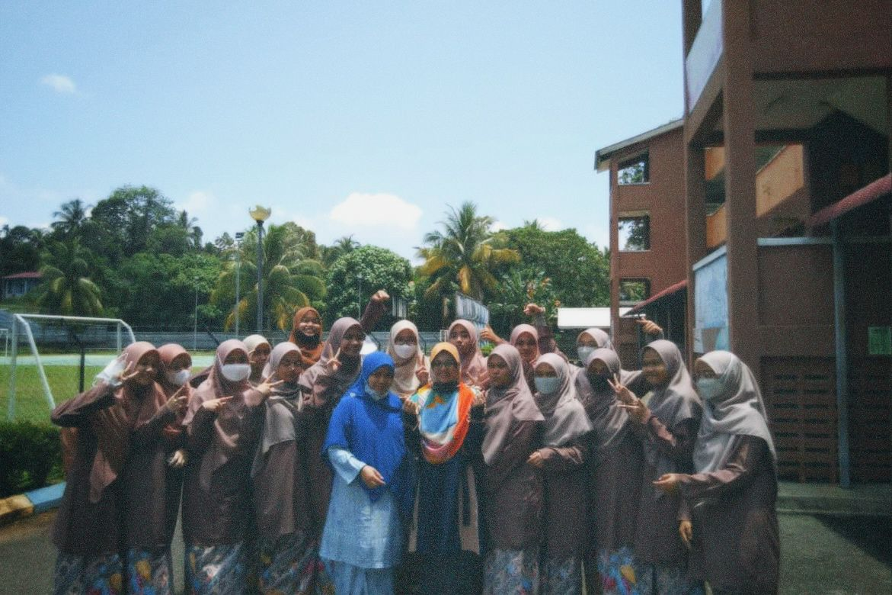
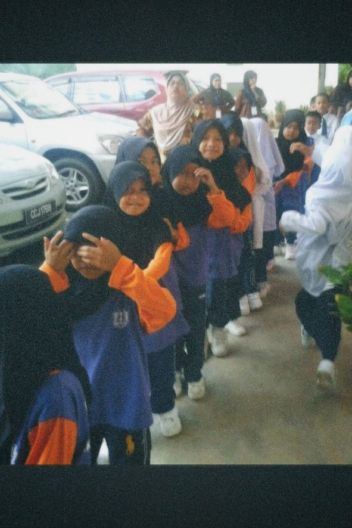
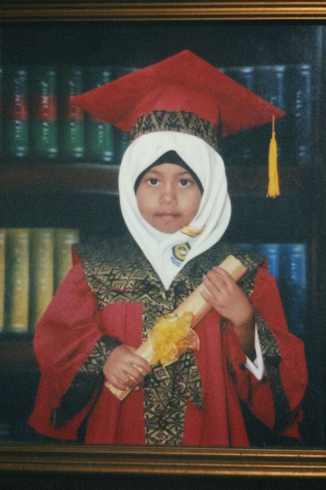

Universiti Teknologi MARA (UiTM) Kelantan
Program: Diploma in Information Management
Year: 2023 – Present
I’m currently in my final semester at UiTM Machang, studying Information Management. This program has introduced me to a wide range of subjects such as digital content management, data organization, system analysis, and web development. I’ve also developed technical and soft skills that are essential in the digital world.
One of my proudest achievements is being consistently listed on the Dean’s List, which reflects my dedication to academic excellence. I’ve also completed individual and group projects involving website design, poster creation, and video editing using tools like Canva and Adobe Premiere Pro.
Achievements
- Dean’s List – Semester 2 (2023)
Awarded for outstanding academic performance with a high CGPA at UiTM Machang.

This achievement motivates me to maintain consistency and strive for excellence in both academic and personal development.
Sekolah Menengah Agama Chenor (SMAC)
Level: Secondary School
Year Attended: 2017 – 2022
During my secondary school years, I balanced academic subjects with Islamic studies. I developed strong discipline, time management, and communication skills through school activities, presentations, and class leadership roles.
Sekolah Kebangsaan Sungai Nerek
Level: Primary School
Year Attended: 2011 – 2016
My educational journey began here, where I first developed my curiosity and love for learning. It was where I built the foundation of my values and communication skills.
Pre-School
Level: Primary School
Year Attended: 2011 – 2016
My educational journey began here, where I first developed my curiosity and love for learning. It was where I built the foundation of my values and communication skills.